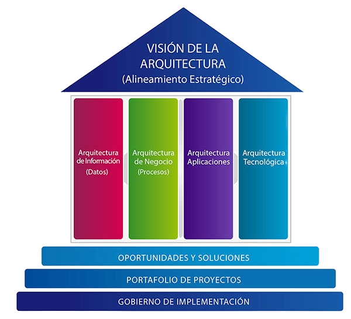

3-Beneficios de usar el marco TOGAF
TOGAF obtiene la calificación más alta en tres características completas para la creación de arquitectura organizacional: Concepciones, moldeo y procedimiento. En las concepciones, TOGAF ofrece una gobernanza y una fuente adecuadas más que la otra mediante la aplicación de un prototipo detallado para ellos. Gracias a eso, cuenta con beneficios como:
La flexibilidad y el código abierto.

Aportar una arquitectura empresarial coherente, basada en los requisitos de las partes interesadas, y aportar cierta consideración.
Desempeña un papel importante para aliviar y disminuir el riesgo en el desarrollo de la arquitectura.
Permitir a los usuarios desarrollar un sistema abierto y basado en soluciones para superar los problemas comerciales y las necesidades de la empresa.
Trae consigo beneficios para reducir los costos operativos y mejorar la congruencia entre los negocios de recursos humanos.